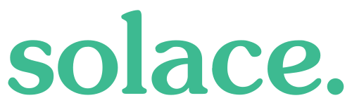

Itinerary in Motion
Your itinerary listens to the world and re-plans itself in seconds. A flight-change event flows through the Solace Event Broker, the EventMesh Gateway invokes a Solace Agent Mesh orchestrator, and a fleet of specialist agents collaborates to deliver a proactive re-plan to each traveler's phone.
What it is
An Agentic AI personal travel assistant built on Solace Agent Mesh Enterprise and Solace Event Broker.
The headline moment
One flight delay event triggers a per-traveler replan card on three audience phones within seconds.
What this page is
A static, offline reference of the runtime topology. No CDN — every asset lives in diagram-pages/.
Runtime architecture
D/changes/flight/...D/res/{traveler_id}/...End-to-end flow
Click for detailAudience joins
Three phones scan kiosk QR codes and bind to their own traveler_id.
Signal arrives
Airline ops feed emits a flight-change signal onto a NATS subject (today: Kiosk chaos button stands in).
MI bridges to Solace
The Micro-Integration republishes onto D/changes/flight/... on the Solace broker.
Agents collaborate
Gateway invokes Orchestrator; it fans out to Flights, Weather, Itinerary, Images.
Targeted replan
Only the affected traveler's phone renders the new card via solclientjs.